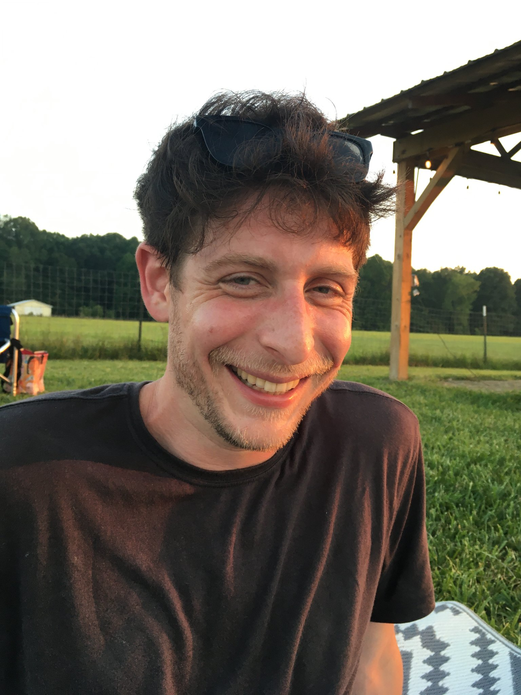

| Home | Research | LAB MEMBERS | Publications (Google Scholar page) |
Diversity, Equity, and Inclusion | Join the Lab | Kelsey's CV | Kelsey at JIC | Birding |
Kelsey (any/all pronouns) completed a Bachelor of Science in Biology at MIT in 2007 and a PhD in Mimulus (monkeyflower) evolutionary genetics at the University of Washington, Seattle with H.D. "Toby" Bradshaw, Jr. and Jeffrey Riffell in 2014. She then was a PLANT FELLOWS Postdoctoral Fellow (2014-2017) in the lab of Florian Schiestl and Philipp Schlüter at the University of Zürich, followed by a postition as a Postdoctoral Research Associate at the University of Cambridge (2017-2020) with Chris Jiggins. She began her own lab at the John Innes Center in 2020.

Dr. Mikhaela Neequaye (she/her) completed a Bachelor of Science in Biology at the University of Leicester and a PhD in broccoli secondary metabolite genetics at the John Innes Centre and Quadram Institute with Lars Østergaard and Richard Mithen in 2019. She joined the Byers Lab in 2020. Mikhaela can be found on Twitter @MNeequayeJIC and at JIC here.
Hannah Gunn (she/her) is an ARIES PhD student in the Byers Lab (start date October 2024). Hannah completed a Masters of Science in Biodiversity and Conservation at the University of Southampton in 2019 before working as a professional ecologist. Her research focuses on Gymndaenia orchid hybridization and conservation.
Dr. Katie Wenzell (she/her) is an Assistant Professor and Herbarium Director at South Dakota State University and completed a postdoctoral stint in the Byers Lab (2021-2023). Katie (she/her) completed a Bachelor of Science in Biology at the University of Oklahoma and a PhD in Castilleja (paintbrush) evolutionary ecology at Northwestern University and the Chicago Botanic Garden with Krissa Skogen and Jeremie Fant in 2021 (read Katie's thesis here).
Dr. Jay Goldberga> (he/him or they/them) is a postdoctoral scholar at Arizona State University with Professor Krystal Tsosie. Jay's research focused on the eco-evolutionary dynamics of interactions between Datura plants and their herbivorous and pollinating insects. Jay was an NSF Postdoctoral Fellow who was co-hosted by my lab and that of Professor Judy Bronstein.
Rose Gooda (she/her) was a Research Assistant in the Byers Lab in 2023. Rose's work focused on the Brassica napus project. She is currently a PhD student at Kew Gardens and Imperial College London studying woodland mycorrhizal fungi.
Benedict Asare (he/him) was a Research Assistant in the Byers Lab in 2024. Benedict's work focused on floral scent in Mimulus section Ertyhranthe.
Becca Collier (she/her) was an undergraduate student from the University of Birmingham who completed a Year in Industry placement in the Byers Lab (2021-2022). She is currently undertaking a PhD at Harper Adams University in agricultural food safety.
| Reach Kelsey by email: Kelsey.Byers (at) jic.ac.uk |